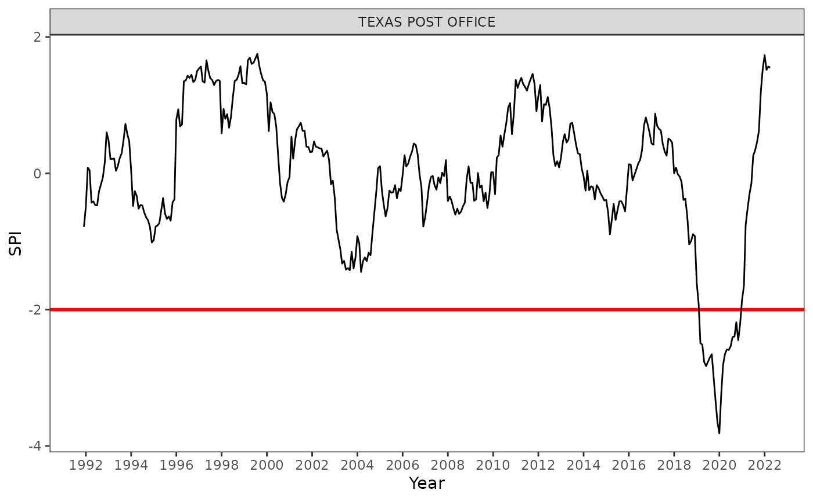

library(tidyindex)
library(dplyr)
library(lubridate)
library(lmomco)
library(ggplot2)
library(tsibble)The tidyindex package provides functionality to construct indexes in a data pipeline, align with the tidyverse paradigm. The pipeline approach is universally applicable to indexes of all kinds. It allows indexes to be broken down into a set of defined building blocks (modules) and hence provides means to standardise the workflow to construct, compare, analyse indexes.
Decomposing an index into steps
Here we present an example to calculate one of the most widely used drought index: Standardised Precipitation Index (SPI). The index is composed to three steps:
- step 1: aggregate the precipitation series in a rolling window
- step 2: fit a distribution (usually gamma), per month, to the aggregated precipitation
- step 3: normalise the fitted values to a standard normal distribution as the index
Pipeline design
These three steps correspond to three modules in the tidyindex pipeline (temporal_aggregate(), distribution_fit(), and normalise()). Each module uses a tidyverse-mutate style to calculate a step within the module. For example, the following code fits a gamma distribution to the variable .agg. Different distributions are available and prefixed with dist_*() and additional distribution can be added by the user following a similar style to the existing dist_*() steps. The step dist_*() can also be evaluated standalone and seen as a recipe of the step:
distribution_fit(.fit = dist_gamma(...))
dist_gamma(var = ".agg")
#> [1] "distfit_gamma"
#> attr(,"var")
#> <quosure>
#> expr: ^".agg"
#> env: empty
#> attr(,"fn")
#> function (var_para, var_fit)
#> {
#> para <- do.call("pargam", list(do.call("lmoms", list(var_para))))
#> var_fit2 <- var_fit[!is.na(var_fit)]
#> fit <- do.call("cdfgam", list(x = var_fit2, para = para))
#> n_padding <- length(var_fit) - length(fit)
#> if (n_padding > 0) {
#> fit <- c(rep(NA, n_padding), fit)
#> }
#> tibble(para = list(para), fit = list(fit))
#> }
#> <bytecode: 0x55cb079cc9c0>
#> <environment: 0x55cb079ca678>
#> attr(,"n_boot")
#> [1] 1
#> attr(,"boot_seed")
#> [1] 123
#> attr(,"dist")
#> [1] "gamma"
#> attr(,"class")
#> [1] "dist_fit"Standardised Precipitation Index (SPI): An example
Here we select a single station, Texas Post Office, where is heavily impacted during the 2019/20 bushfire season, in Queensland, Australia, to demonstrate the calculation.
texas_post_office <- queensland %>%
filter(name == "TEXAS POST OFFICE") %>%
mutate(month = lubridate::month(ym))
dt <- texas_post_office |>
init(id = id, time = ym, group = month) |>
temporal_aggregate(.agg = temporal_rolling_window(prcp, scale = 24)) |>
distribution_fit(.fit = dist_gamma(var = ".agg")) |>
tidyindex::normalise(.index = norm_quantile(.fit))
dt
#> Index pipeline:
#>
#> Steps:
#> temporal: `rolling_window()` -> .agg
#> distribution_fit: `distfit_gamma()` -> .fit
#> normalise: `norm_quantile()` -> .index
#>
#> Data:
#> # A tibble: 365 × 14
#> id month ym prcp tmax tmin tavg long lat name .agg .fit
#> <chr> <dbl> <mth> <dbl> <dbl> <dbl> <dbl> <dbl> <dbl> <chr> <dbl> <dbl>
#> 1 ASN0004… 12 1991 Dec 1340 31.7 16.1 23.9 151. -28.9 TEXA… 10807 0.216
#> 2 ASN0004… 1 1992 Jan 1732 34.4 18.5 26.5 151. -28.9 TEXA… 11699 0.313
#> 3 ASN0004… 2 1992 Feb 1850 31.2 19.2 25.2 151. -28.9 TEXA… 13091 0.533
#> 4 ASN0004… 3 1992 Mar 146 31.0 14.1 22.6 151. -28.9 TEXA… 13081 0.518
#> 5 ASN0004… 4 1992 Apr 324 27.2 12.6 19.9 151. -28.9 TEXA… 11876 0.333
#> 6 ASN0004… 5 1992 May 597 22.0 9.12 15.6 151. -28.9 TEXA… 11861 0.340
#> 7 ASN0004… 6 1992 Jun 76 18.6 2.49 10.5 151. -28.9 TEXA… 11775 0.320
#> 8 ASN0004… 7 1992 Jul 100 19.8 1.73 10.8 151. -28.9 TEXA… 11735 0.319
#> 9 ASN0004… 8 1992 Aug 578 20.8 4.01 12.4 151. -28.9 TEXA… 12213 0.397
#> 10 ASN0004… 9 1992 Sep 416 22.8 6.41 14.6 151. -28.9 TEXA… 12439 0.436
#> # ℹ 355 more rows
#> # ℹ 2 more variables: .fit_obj <list>, .index <dbl>The results contain a summary of the steps used and the data with intermediate variables (.agg, .fit, and .fit_obj) and the index (.index). We can plot the result using ggplot2 as:
dt$data |>
ggplot(aes(x = ym, y = .index)) +
geom_hline(yintercept = -2, color = "red", linewidth = 1) +
geom_line() +
scale_x_yearmonth(name = "Year", date_break = "2 years", date_label = "%Y") +
theme_bw() +
facet_wrap(vars(name), ncol = 1) +
theme(panel.grid = element_blank(),
legend.position = "bottom") +
ylab("SPI")
What’s more
There are many different things you can do with the package, for example:
- to switch from SPI to Standardized Precipitation-Evapotranspiration Index (SPEI), simply add an variable transformation step to compute evapotranspiration from temperature data:
variable_trans(.pet = trans_thornthwaite(.tavg = tavg, .lat = lat)) - a set of existing drought indexes are available as
idx_spi(),idx_spei(),idx_edi(), andidx_rdi() - to compute multiple indexes at once, check
compute_indexes() - to calculate parameter uncertainty with the distribution fit, check the
.n_bootargument in thedistribution_fit()